ようこそ☺︎
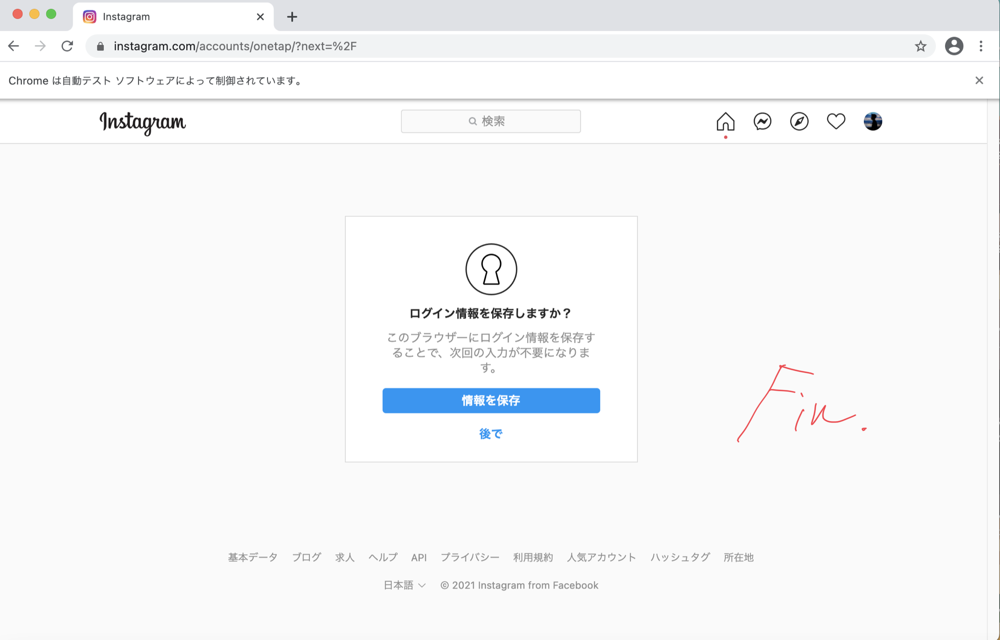
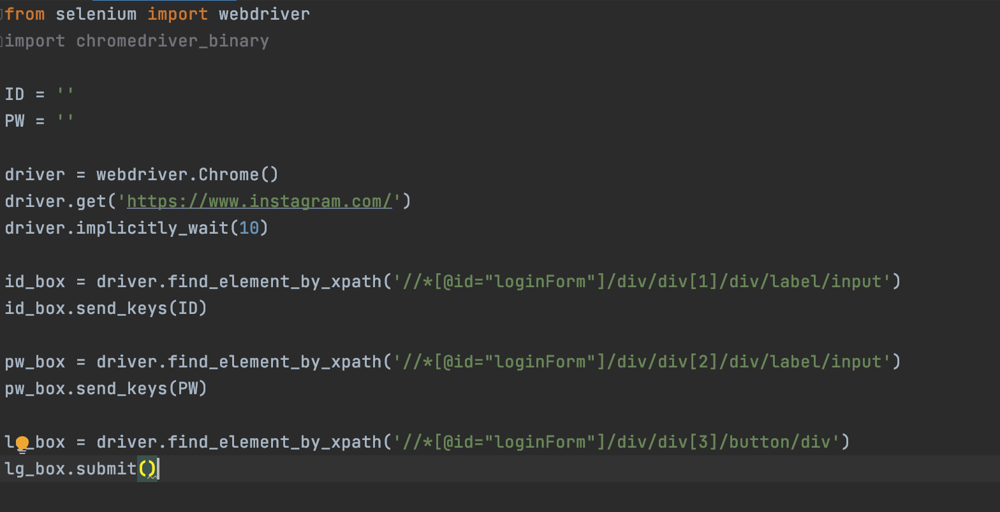
・Pycharm
・Google Chrome
これをインストールする前に、Google Chromeのバージョンを確認する必要があります。
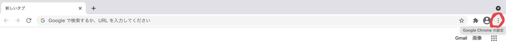
①Google Chromeを開いて、右上の赤丸を押す。
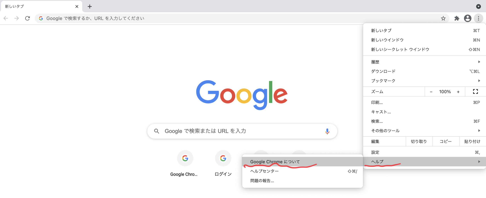
②ヘルプをのところに行き、Google Chromeについてを見る。
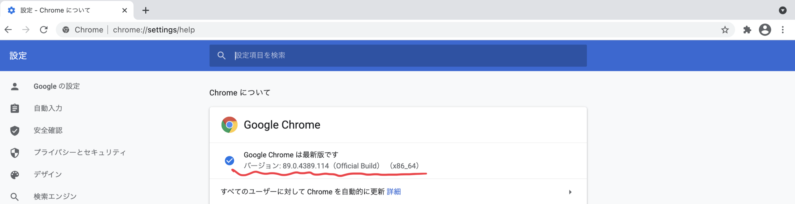
③それぞれのバージョンを確認する。
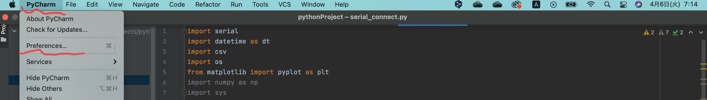
①PyCharmを開いて、Preferenceに行く。
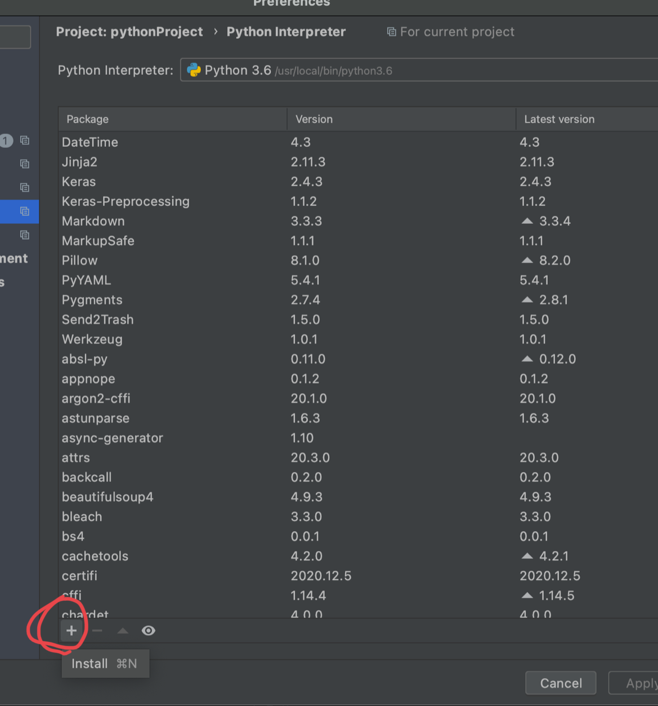
②左下のプラスボタンを押す。
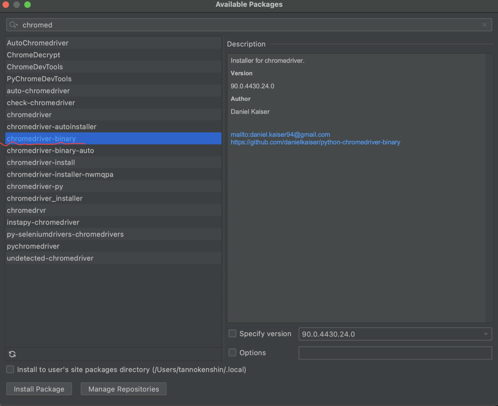
③chromedriver_binaryと入れて選択。
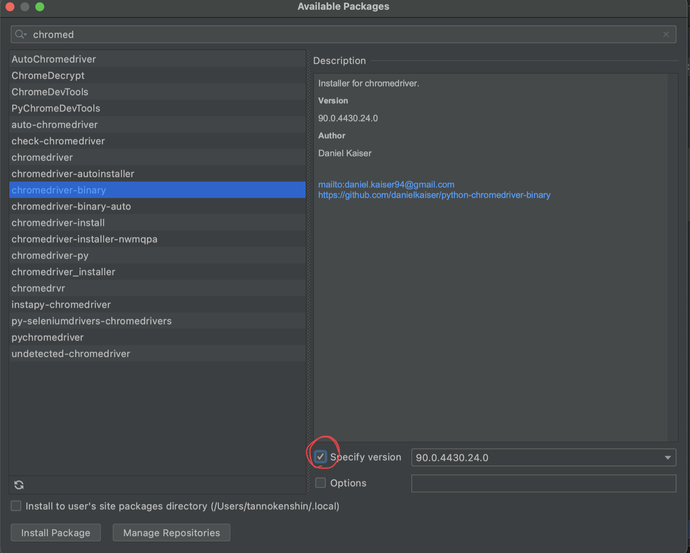
④赤丸のところのチェックボタンを押す。
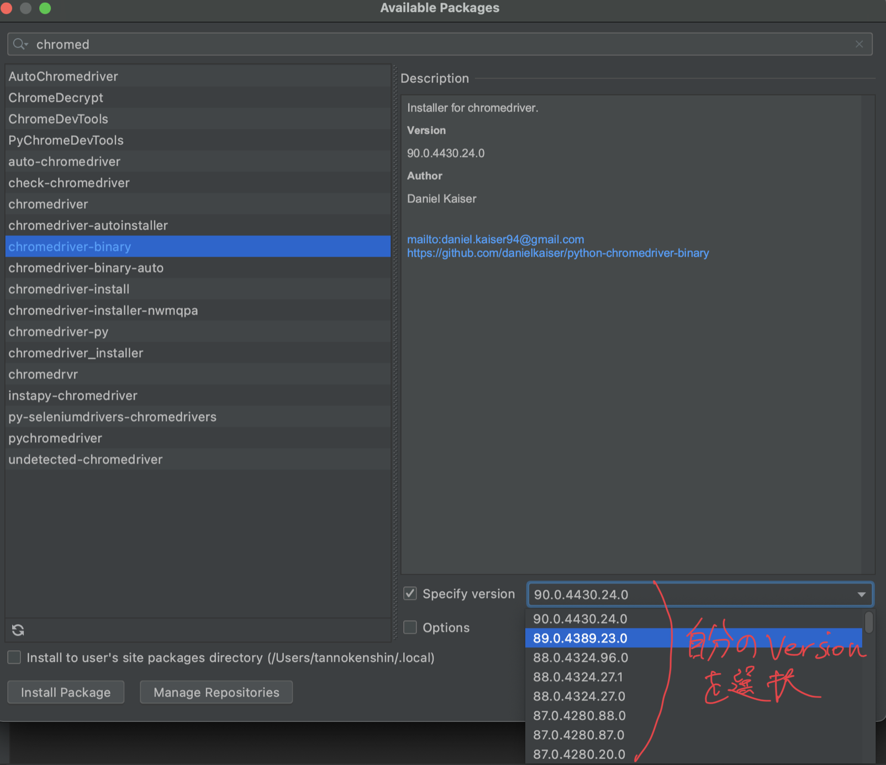
⑤先ほど確認した、バージョンを選択する。
⑥選択して、インストールをクリック。
上記のPreferenceに行くところから、同文（seleniumと入れてインストール)。
これは後に必要になります。今は飛ばして後で戻って来ても良いと思います。
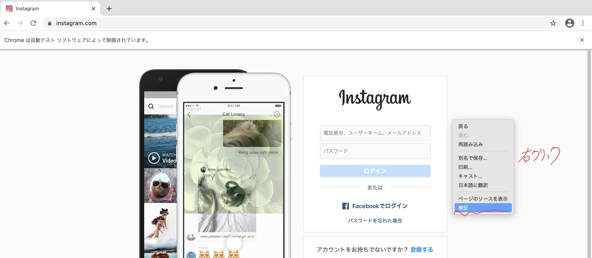
①右クリックで検証を押す。
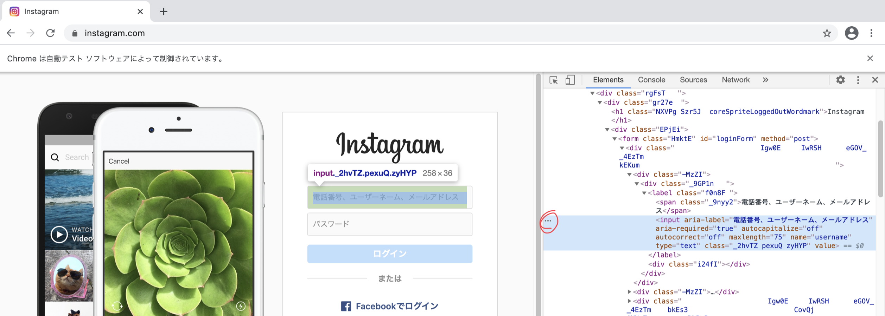
②必要なパートのHTMLを見つけて縦3点を押す。
（探したいところで右クリックしてもう一度検証すると簡単にいけます。）
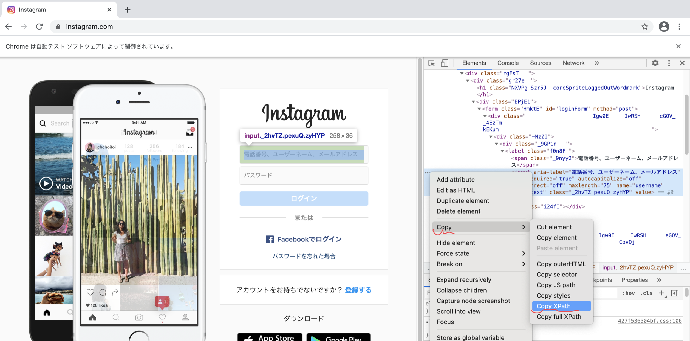
③Copy Xpathを選択。
from selenium import webdriver
import chromedriver_binary
①インポート
ID = ''
PW = ''
②それぞれのログインのための、IDとパスワードを入れる。
driver = webdriver.Chrome()
driver.get('https://www.instagram.com/')
driver.implicitly_wait(10)
③ここでインスタのホームページを呼ぶ。
（）内はインスタのURL。
そして１０秒待機。
id_box = driver.find_element_by_xpath('//*[@id="loginForm"]/div/div[1]/div/label/input')
id_box.send_keys(ID)
④IDを送る。
pw_box = driver.find_element_by_xpath('//*[@id="loginForm"]/div/div[2]/div/label/input')
pw_box.send_keys(PW)
⑤パスワードを送る。
lg_box = driver.find_element_by_xpath('//*[@id="loginForm"]/div/div[3]/button/div')
lg_box.submit()
⑥最後に、ログインボックスを押す。
これでインスタグラムに自動でログインできるようになりました。
もっと発展的にやりたい人は、これを応用して
高度なことに挑戦してみてください。
私は、DM自動削除や、スクレイピングも組み合わせて、
DMで自動でニュースを送信するといったことを作成しました。
いつかそれも投稿します。
Fin.